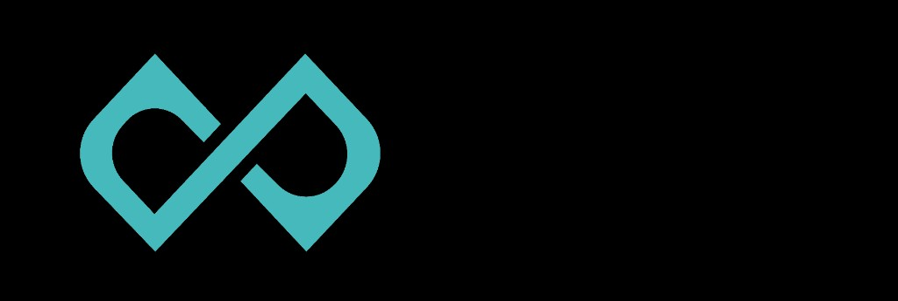

GLIDETelegram вместо отдельного CRM. Ссылка — вместо переписки «когда можно?». Каталог Ice Studio и аналитика — в одном боте.
Вместо переписки «когда можно?» — один поток в Telegram.
Среда · Minsk Arena
Сейчас важно
Анна · 18:00
Minsk Arena — подтвердить
Одно нажатие — и напоминание обоим.
Telegram
Без установки и настройки CRM — вы уже здесь каждый день.
Ваша ссылка
Кидаете в чат родителю или ученику — он сам выбирает слот.
Подтверждение
Заявка приходит в бот. Одно нажатие — и напоминание обоим.
Рост
Новые клиенты из каталога Ice Studio — пока вы на льду.
Одно сообщение — и то не каждый день. Никогда — поверх дайджеста. Нечего сказать — мы молчим.